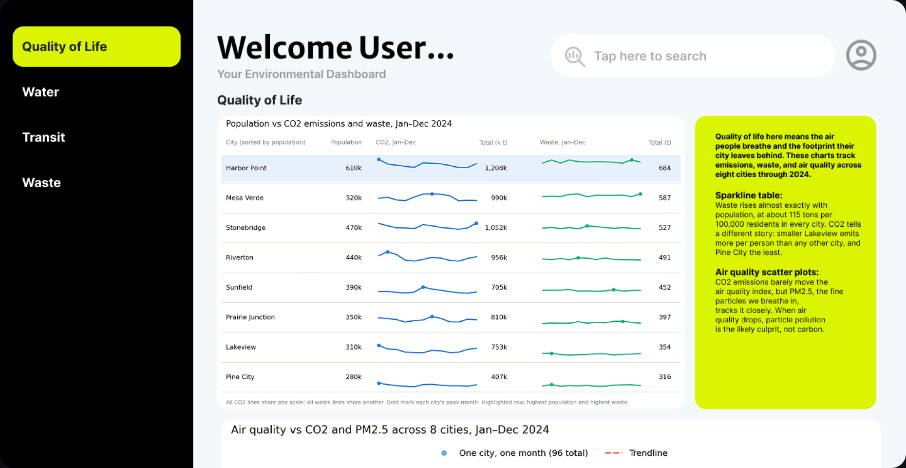
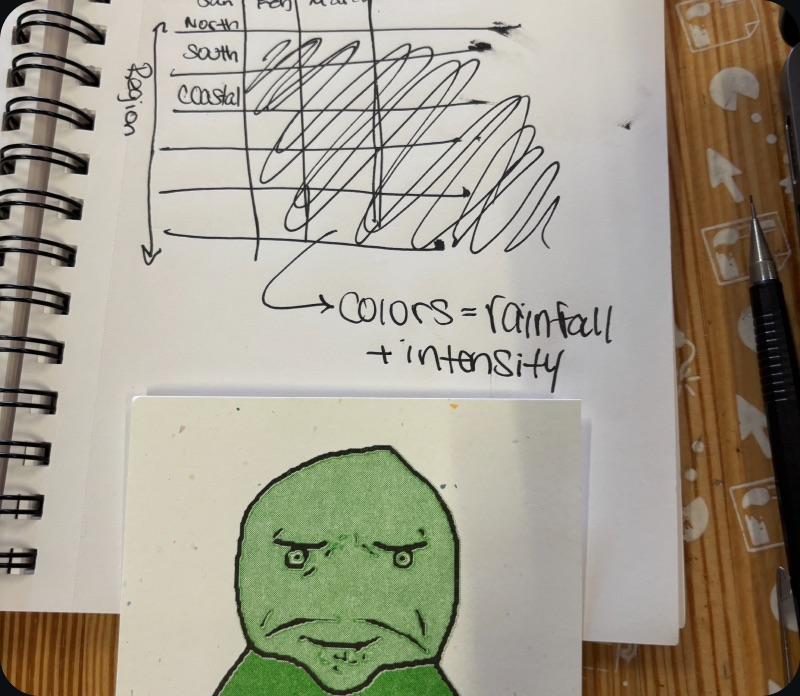
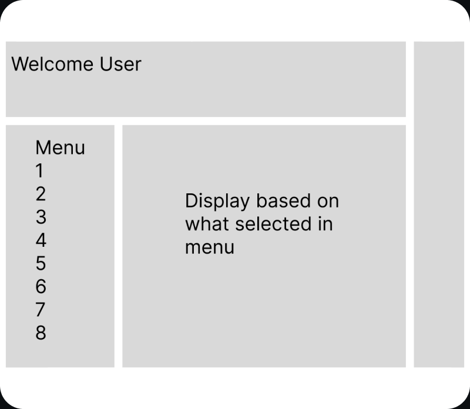
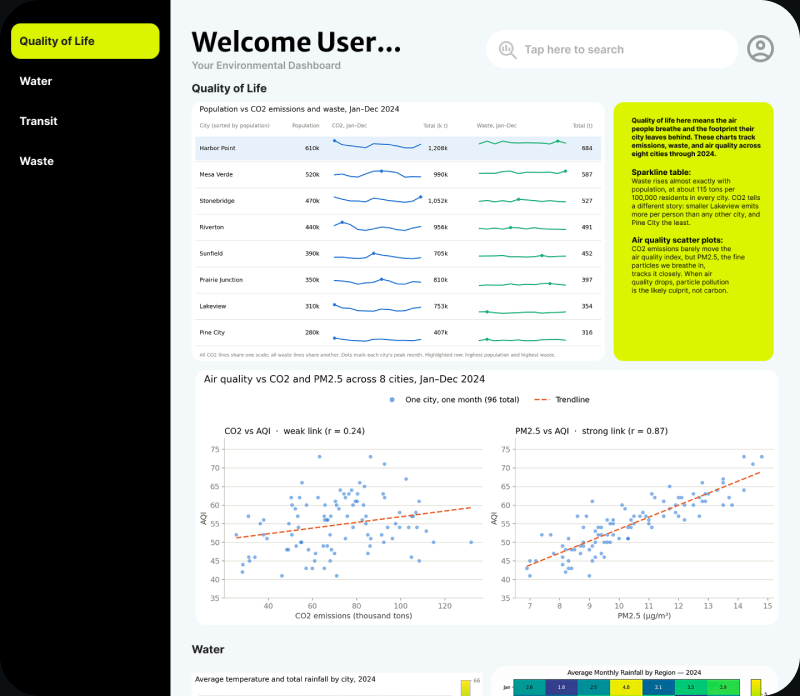
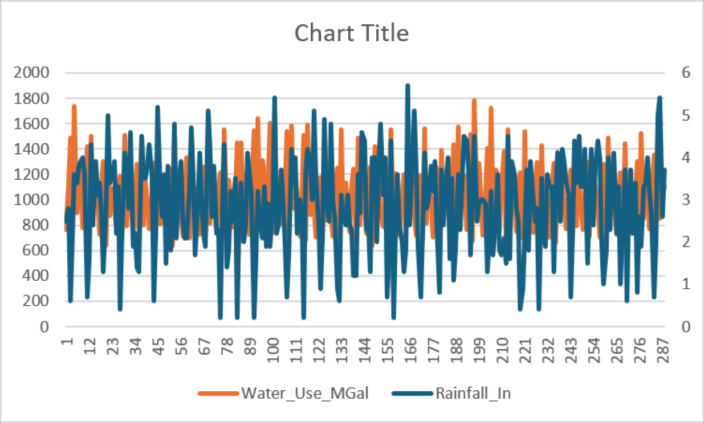
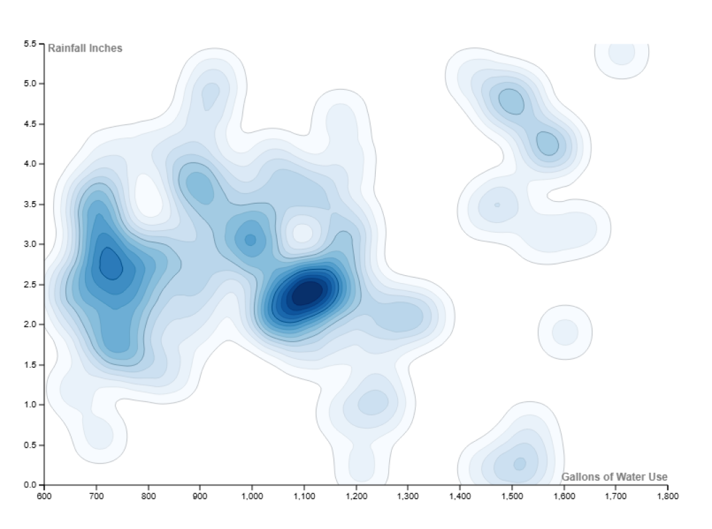
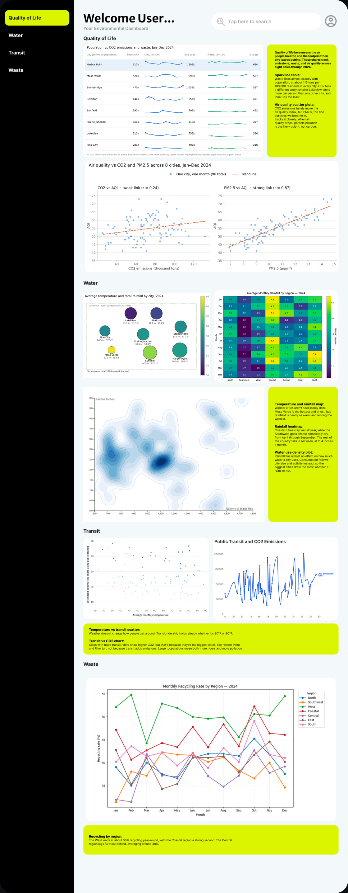

UX/UI CASE STUDY - 2026
Ecological Dashboard
A year of environmental data, made readable for a decision-maker with no time.

- Role
- Design Lead
- Team
- 3 designers
- Tools
- Figma
- Timeline
- Fall 2026
01 - The problem
A year of data. A reader with no time.
We had a year of environmental data for eight cities: emissions, waste, recycling, transit, water, rainfall and air quality. The brief was to build a dashboard for one specific audience. Ours was a politician who needs a strong case fast, and isn't comfortable with complex tech.
02 - My role
Leading a team of three.
I was the design lead. I organized the raw data, built the user personas, set the team's goals before each class, led sketching and prototyping, and built the final prototype. The final layout came from my sketch; Aderyn Millhollen and Caleigh Schlichte turned it into the dashboard while I was out sick.
03 - Meet the users
Who it's for, and who it's from.
Two personas shaped every decision: the person reading the dashboard, and the person whose data it presents.
THE AUDIENCE
The Governor
62 · State governor
Needs a strong, clear argument before acting on a big idea. Has little time and isn't comfortable with complex tech, so the data has to be easy to digest.
THE CREATOR
Chelsea, the Scientist
28 · Environmental scientist · Seattle, WA
Studies how people's actions affect the environment and wants to prove it to the government. She brings the data; the dashboard has to make her case.
04 - The data
Eight questions, four themes.
We listed ten questions and narrowed them to eight, like how population relates to CO2 emissions, and whether people skip public transit in bad weather. Grouping them into four themes made the data manageable, and the themes became the dashboard's navigation.
Quality of Life
questions
Water
questions
Transit
questions
Waste
question
05 - From sketch to screen
From sketch to dashboard.
I sketched layout options, the team compared them, and my final sketch became the dashboard's structure: theme navigation on the left, charts in the middle, and plain-language takeaways beside them.



06 - The hard part
Too many data points, not enough ways to show them.
Charts were the biggest challenge. The data jumped around a lot, and many standard charts were hard to read at a glance, which is exactly what our politician needed.


07 - How I split the work
Breaking the project into pieces.
I broke the data set down so everyone knew what we had, narrowed our questions from ten to eight, assigned each teammate their questions, and set how many sketches each person owed before the next class.
The data, broken down
- Lakeview
- Riverton
- Mesa Verde
- Pine City
- Harbor Point
- Prairie Junction
- Stonebridge
- Sunfield
- Region
- Population
- Electricity use
- Renewable share
- CO2 emissions
- PM2.5
- AQI
- Avg. temperature
- Rainfall
- Water use
- Waste tons
- Recycling rate
- Transit share
Tracked monthly for one year, so every chart could show change over time.
Questions, assigned
- 01How population affects CO2 emissions and waste
- 02Recycling tons vs. waste tons
- 03Public transit and CO2 emissions
- 04Rainfall by region and month
- 05Water use vs. rainfall
- 06Whether temperature affects public transit use
- 07CO2 emissions vs. air quality (AQI, PM2.5)
- 08Population by regionCUT
- 09Average temperature and rainfall
- 10Region and public transitCUT
Ten questions, narrowed to eight and split between three people.
9/222-3 sketches per Question by next class.
9/24Next class period also please have 2-3 layout designs.
08 - The final dashboard
One theme at a time.
Each theme gets its own section, with highlighted boxes that say what the charts mean in plain language.

Theme navigation
Quality of Life, Water, Transit and Waste, matching our four question groups.
Plain-language takeaways
Highlighted boxes explain each chart, so the politician doesn't have to decode it.
Change over time
Sparklines and monthly lines show how each city shifted across the year.
09 - Reflection
Data as the main character.
This project pushed me to treat data as the center of a design, not something added at the end. It also taught me to lead: setting goals and keeping three people moving toward one design.
10 - What I'd do now
Make it truly glanceable.
The final dashboard still asks a lot of a reader with no time. A next version would lead each theme with three headline numbers and one key chart, with the rest of the detail a click away.